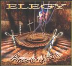

| Artist: | Elegy |
| Title: | Principles Of Pain |
| Label: | Locomotive Music catnr unknown |
| Length(s): | 58 minutes |
| Year(s) of release: | 2002 |
| Month of review: | [05/2002] |
| 1) | Under My Skin | 4.35 |
| 2) | The Inner Room | 3.59 |
| 3) | No Code No Honour | 4.38 |
| 4) | Walking Nightmare | 5.27 |
| 5) | Pilgrims Parade | 4.14 |
| 6) | Principles Of Pain | 5.17 |
| 7) | Creatures Of Habit | 4.36 |
| 8) | Silence In The Wind | 4.57 |
| 9) | Hypothesis | 5.01 |
| 10) | Missing Persons | 3.44 |
| 11) | A Child's Breath | 6.33 |
| 12) | Silence In The Wind (acoustic) | 4.57 |